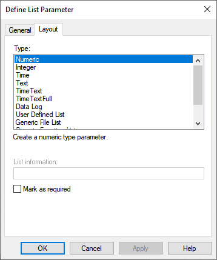
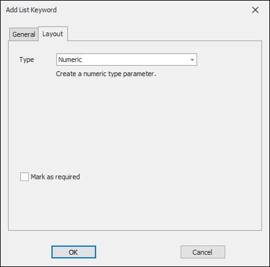
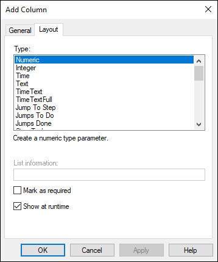
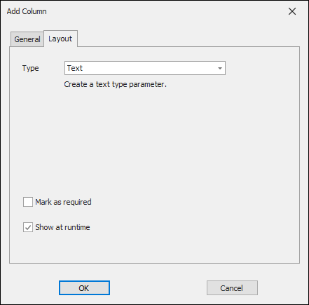
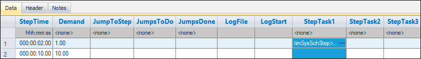

iTest User's Guide
This document is to be used as reference material. For creating schedules using ScheduleRunner, refer to the Creating Schedules in Test Manager or Managing Schedules in SolutionBuilder documentation.
Previously, running a Schedule was exclusively executed by using custom VCL script. Now, a small set of standardized VCL procedures (relying on internalized functionality) manages the handling of numerous actions to support test development via the ScheduleRunner interface, including:
iTest includes a set of VCL functions designed to take over these tasks from VCL and adds them to complied iTest code. Moving this code from script to compiled code increases performance and provides a lot more error checking. Relying on the system to execute the schedules can result in 100 Hz schedules and perhaps even faster schedules in future releases.
 |
NOTE: | This document specifically applies to schedules not prepared with BTS' PrepareCircuitSchedule. |
The PrepareSchedule command prepares a schedule to be run by loading it into memory and performing all validation checks to verify it can run properly. If successful, the schedule is ready for RunSchedule to start execution.
Syntax:
PrepareSchedule <ID>, <Schedule.sc2>, <NumStatusChannel>, <StrStatusChannel> PrepareScheduleEx <ID>, <Schedule.sc2>, <Page>, <NumStatusChannel>, <StrStatusChannel>
Where:
vsSysSchState system channel. |
NOTE: | PrepareSchedule will report additional error messages with a negative error code in Softpanel; you can find the meaning using the Error Codes documentation. For example, the error code for -10 means Table error, file not found. |
The RunSchedule command starts executing a schedule previously loaded by PrepareSchedule.
Syntax:
RunSchedule <ID> <Schedule.sc2> <ReadFromFile> <Options> <Start Step> <Start Step Hook> <End Step Hook> <Status Channel>
Where:
-2 = Schedule not Prepared.Procedures called by Start Step Hook, End Step Hook, and MODE columns must execute to completion immediately. All lines must have +0.0 timestamps and no PAUSE statements. SPAWN another procedure if it is necessary to have a delay; otherwise, you will receive a warning message about how the procedure must run to completion and must not PAUSE or delay. While entering a step, a STOPSCHEDULE command in a Start Step Hook or a Mode procedure will stop the schedule before changing the setpoints but after the (internal and hidden) tablerowtodb call.
Example:
SET FromFile 1 SET StartStep 5 +0.0 RUNSCHEDULE 1 "AAAScheduleTest.sc2" FromFile "JST" StartStep "StartStepHook" "EndStepHook" numSysSchStatus
The I (uppercase letter i) option attempts to run the schedule immediately on the same scan. This is not possible when loading from a restart file, in which case the I option is ignored and a warning is generated.
 |
CAUTION: | The I option may cause scan time violations for large schedules (greater than 100 rows) and must be used with discretion. |
The Start Step Hook is called when entering a step after the ScheduleRunner updates channels. The End Step Hook is called when a step is over, including at the end of a test.
Step Hooks may be defined with a numeric argument to get the ID, which is useful for BTS. Do not pass the argument in the RUNSCHEDULE command. Simply define the following argument in the hook procedure (i.e., $ARGUMENT Index,Number,ByVal):
To guarantee real-time execution, Step Hooks are executed, not spawned, for the current scan. Any statements following a pause, delay, or switch to non-real-time will not be executed. Use extreme caution when editing step hooks; this behavior will cause subtle bugs. For example, in this hook's VCL, B's final value will be 2:
* Valid Step Hook statements because all statements execute immediately +0.0 SET A 1 +0.0 SET B 2 +0.1 SET B 3 * Not executed because of +0.1 delay +0.0 SET B 4 * Not executed because of preceding delay VCLNUM Status * Not valid, all statements must be proceeded with +0.0
Schedule control can be accomplished externally via the following VCL commands and functions. Refer to the table below for a list of status channel values.
Status Channel Values
| Status Channel Value | Description |
| 0 | Command not complete. |
| 1 | Successful. |
| 2 | Schedule not running. |
Commands:
Schedule=aaascheduletest.sc2
State=Stopped
NumRows=9
NumCols=24
Step=1
StepTimeElapsed=1.500
TestTime=21.500
JmpCntr7=1
Done=1
|
NOTE: | JmpCntr7=1 means that the jumps done counter on Step 7 had been done 1 time. |
Functions:
faultflag is 1, save to the schedule.sc2.1.fault.restart file. Returns 1 when complete.System Channel Descriptions
| Channel | Description |
| numSysSchStep | This is the step the schedule is on. 0 means nothing has run yet -1 means finished |
| timSysTestOnStep | This is the amount of time this step has been executed. |
| timSysStepLeft | Step time left. To end a step prematurely, use the NextStep command. |
| vsSysSchState | Set by the system to indicate ScheduleRunner status: Not Prepared Prepared Running Paused Aborted Stopped Finished |
| numSysSchState | Corresponds to above state: 0 - Not Prepared 1 - Prepared 2 - Running 3 - Paused 4 - Aborted 5 - Stopped 6 - Finished |
| timSysTest | Test time. |
These are the column types that the internal schedule runner does something special with in addition to setting the channels (via an internal TableRowToDB).
Validation Rules:
numSysSchBlueBar (ScheduleStatusChannel=numSysSchBlueBar).ScheduleRunner=Internal.ScheduleRunner=Internal) means extra validation is enforced when saving schedules in Test Manager.The List page is commonly labeled as the Header page in the Schedules editor. This page is a set of parameters or keyword/value pairs that can be modified prior to running a test.
The following table describes the available parameter types found in the Define List Parameter (available in Test Manager) and Add/Insert/Edit List Keyword (available in SolutionBuilder) dialogs:
Dialogs
| Define List Parameter Dialog | Add List Keyword Dialog |
|  |  |
Parameter Type Descriptions
| Parameter Type | Description | Validation/Notes |
| Numeric | A numeric type parameter. | - |
| Integer | An integer type parameter. | - |
| Time | A time type parameter. | - |
| Text | A text type parameter. | - |
| TimeText | A time entry with colons, as needed (e.g., 00:00:00). | - |
| TimeTextFull | A time entry in the format of 000:00:00.00. |
- |
| Limit File List | A pick list of limit file (.lim) selections. | Only available in SolutionBuilder for non-BTS solutions. |
| Data Log | A picklist of data log selections. | - |
| User Defined List | A picklist of user defined entries. | The list entry is semi-colon delimited (e.g., TRUE;FALSE). |
| Generic File List | A picklist of file selections. | The list entry must be a fully qualified path. $ substitutions are allowed in the file specification. |
| Generic Function List | A picklist of VCL procedure selections. It is intended that the VCL procedure return a value or string. | The list entry must be a fully qualified path. $ substitutions are allowed in the file specification. Use of wildcards is supported. E.g., $SUPPORTDIR\Test\SysFunctions\*.tsc. |
| User Picklist | A picklist of items in a picklist file (.pkl). | Users can select an option from the list. The picklist file must reside in the active support directory. |
| Editable User Picklist | A generic input parameter. Also provides a pick list of items from a picklist file (.pkl) residing in the active support directory. | User can either manually type in an entry or select from the list. |
The table below contains editable List Page parameters. The last column defines who is responsible for handling and validation. Many of these parameters are handled through the use of VCL scripts rather than being internalized into the ScheduleRunner code and, therefore, may or may not be used in your schedules. This has been noted in the table.
Parameter Descriptions
| List Parameter | Parameter Type | Description | Example Value | SR Handling Type: I = Ignored / No Validation A = Application S = System |
| Preload | Text | Controls whether the schedule is prepared during test build. This cannot be used if the schedule is stored in a subfolder. | True/False | S |
| ScheduleRunner | Text | If value=Internal, then Test Manager does validity checking when user saves to disk. |
Internal/VCL | S |
| TransientLogName | Data Log | Transient log file name used by the test. | - | S |
| TransientLogStartStep | Integer | Log starts at the beginning of the step. | - | S Step must be in schedule. |
| TransientLogEndStep | Integer | Log ends at the end of the step. If set to -1, the multi-step transient log will run through the last step regardless of how many steps have been added or deleted. | - | S Must also be >= TransientLogStartStep. |
| Limits | Limit File List | (Transient only) Limits to be applied when running this schedule. | - | S |
| StepTime | Numeric | (Transient only) Step time for each step of this schedule. Step Time must be greater than scan time (e.g., 0.01 when SystemScanRateHz= 100). |
- | S |
| RestartStep | User Picklist | Step to be executed after a test is stopped and restarted (First, Current). | - | A |
| TestStartMode | User Picklist | What mode the test can be started in (Started, Stopped). | - | A |
| StartProcedure | Tests | A procedure that is launched at the start of a test. | - | A |
| StopProcedure | Tests | A procedure that is launched when a test is stopped. | - | A |
| EndProcedure | Tests | A procedure that is launched at the end of a test. | - | A |
| StartDisplay | User Picklist | Whether the test dialog display should be launched (Yes, No). | - | A |
| Status | User Defined List | Updated automatically by the test (Not Started, In Progress, Stopped, Completed). | - | A |
| CurrentStep | Integer | The current step number updated automatically by the test. | - | I |
| PredictedTestTime | Numeric | Test duration calculated during pre-start test analysis. | - | I |
| ElapsedTestTime | Numeric | The test elapsed time updated automatically by the test. | - | I |
The .sc2 file has an Allow Edit field which controls whether Test Manager allows the user to edit these fields. The table below contains a list of parameters that are grayed by default. The furthest right column defines who is responsible for handling and validation.
Grayed Parameter Descriptions
| Setting | Parameter Type | Description | SR Handling Type: I = Ignored / No Validation A = Application S = System |
| ScheduleStatusChannel | Channel List | iTest reads this setting to find out which channel controls the highlight bar row in ScheduleViewer. | S Updated by ScheduleRunner when running. |
| TestModuleID | Text | Test module identification (hard coded). | I |
| TestType | User Picklist | SteadyState or Transient. Determines how the test schedule is interpreted by the SysTest procedures. When TestType is SteadyState, StepTime must be a column. | I |
| LogType | Text | Avg or Trans. Together with TestType, it determines which report to use. | A |
| TestName | Text | The name given to the individual schedule. This name is also concatenated with the run number to create the data file name. | A |
| DynoRampMode | User Defined List | Default mode for column labeled DynoSetpoint. |
I |
| ThrotRampMode | User Defined List | Default mode for column labeled ThrottleSetpoint. |
I |
| ReportName | Text | Name of report this schedule will generate. | A |
The Matrix page is commonly labeled as the Data page in the Schedules editor. This page contains several column types that can be used to configure your tests. ScheduleRunner validates schedules by going from left to right for each column and checking rules based on the column type.
The following table describes the available column types found in the Add/Edit/Insert Column dialog for non-BTS solutions:
Dialogs
| Test Manager Add Column Dialog | SolutionBuilder Add Column Dialog |
|  |  |
Column Type Descriptions
| Column Type | Description | iTest Channel Name Example | Validation/Notes |
| Numeric | A numeric type parameter. | - | - |
| Integer | An integer type parameter. | - | - |
| Time | A time type parameter. | - | - |
| Text | A text type parameter. | - | - |
| TimeText | A time entry with colons, as needed (e.g., 000:00:00). | - | - |
| TimeTextFull | A time entry in the format of 000:00:00.00. | - | - |
| Jump To Step | Used for looping; the indicated step number or label would be next if there are remaining jumps to do. | numSRJumpToStep | Only one Jump To Step type column is allowed. Step must be within range. If one of these are defined, all 3 jump related columns must be defined. Must be 0. |
| Jumps To Do | Number of jumps/loops to be performed. | numSRJump | Only one Jumps To Do type column is allowed. 0 <= x < 2^32 |
| Jumps Done | Jumps/loops completed (this will automatically increment after each jump). | numSRJumps | Only one Jumps Done type column is allowed. BTS systems support the use of channels with this column type. For more information, see the Jump Counters section. |
| Step Task | Creates a Step Condition column and its underlying structure to setup step conditions as well as their actions. | vsSysSchStepCondition | Up to 5 EOSIgnoreTime columns are allowed. |
| EOSCondition | Creates a step condition parameter. | - | This column is automatically created when a Step Task column is created. This option is only available in Test Manager. Must follow a Step Task column and be followed by an EOSAction column. |
| EOSAction | Creates a step condition action parameter. | - | This column is automatically created when a Step Task column is created. This option is only available in Test Manager. Must follow an EOSCondition column and be followed by an EOSGo To column. |
| EOSGo To | Creates a step condition GoTo step parameter for the GoTo action. | - | This column is automatically created when a Step Task column is created. This option is only available in Test Manager. Must follow an EOSAction column. |
| EOSIgnoreTime | Creates a step condition ignore time parameter. | - | This column is automatically created when a Step Task column is created. This option is only available in Test Manager. Must follow an EOSGo To column. |
| Modes | Create a picklist of mode pair selections. | vsDt1SchMode | Only one Modes type column is allowed. ScheduleRunner automatically executes this procedure. |
| Tests | Create a pick list of VCL procedure (.tsc) selections. The procedure is spawned at the beginning of a test step/aborted at the end. | vsSysSchTask | Up to 5 Tests columns are allowed. |
| Limit File List | A pick list of limit file (.lim) selections. Used to change limit groups for a particular step. | vsSysSchLimitsGroup | Only one Limits type column is allowed. |
| Data Log | Name of the data log to run. | vsSysLogFile | Only one Data Log type column is allowed if LogDuration exists. |
| Log Start | If positive, the log starts at that time. If negative, the log starts at step time - logstart. |
timSysTestLog | Total value must not be greater than step time. Must follow a Data Log column. |
| User Defined List | A pick list of user defined entries. | - | The list entry is semi-colon delimited (e.g., TRUE;FALSE). |
| Generic File List | A a pick list of file selections. | - | The list entry must be a fully qualified path. $ substitutions are allowed in the file specification. |
| Generic Function List | A picklist of VCL procedure selections. It is intended that the VCL procedure return a value or string. | - | The list entry must be a fully qualified path. $ substitutions are allowed in the file specification. Use of wildcards is supported. E.g., $SUPPORTDIR\Test\SysFunctions\*.tsc. |
| User Picklist | Create a pick list of items from a picklist file (.pkl). | - | Users can select an option from the list. The picklist file must reside in the active support directory. Picklist message options: - Send message when entering the step - Send message at step time in previous column - Send message at step time left in previous column - Send message when there is 1 second left - Do not send message |
| Editable User Picklist | Create a generic input parameter. Also provides a pick list of items from a picklist file (.pkl) residing in the active support directory. | - | User can either manually type or select from the list. |
| Step Time | The duration of the step (usually in seconds). | timSysStep | Only one Step Time type column is allowed. Required if not in the header. User may set this channel to end the step. Note: 0 = infinite time. (TestTime keeps incrementing the time). |
| Setpoint | Ramps the setpoint channel to the new target value (the value of the cell) with options on ramping. The target value may be a constant, a channel, or a simple expression (e.g., Cntr1 * 10). A channel may be of any type except for virtual string and virtual string array. |
valDt1DynoSetpoint | Multiple Setpoint type columns are allowed. Simple expressions are constantly re-evaluated over the course of the step. Picklists are optional. If utilized, only the value in a picklist is displayed and used. Ramping may be based on either a rate or time. This is determined by the setpoint column's Default Ramp Type and Default Ramp Value settings or by Ramp Type and Ramp Value type columns immediately to the right of the Setpoint type column. Setting Default Ramp Type to "StepTime" causes the setpoint to be ramped over the duration of the step. For rate-based ramps, the setpoint channel ramps at a constant rate (i.e., ramp value per system scan) toward the target value. For time-based ramps, the setpoint channel ramps from the initial value to the target value over the specified time period. If the setpoint expression's value changes during a time-based ramp, then the current value will jump and continue ramping to the new value at the old rate. After the ramp time has elapsed, the setpoint is set directly to the expression's value. Blank setpoints will be left unchanged. |
| Ramp Type | Selection of ramp mode. Options are Rate or Time. | RampMode/ valDt1DynoSchRampValue | Multiple Ramp Type type columns are allowed. Must follow a Setpoint column. |
| Ramp Value | The ramp value is used differently between a rate-based and a time-based type ramp. The ramp value for rate-based ramps is the amount that the setpoint channel ramps by (e.g., 100 RPM) until it reaches the target value. The ramp value for time-based type ramps is the period of time (e.g., 5 seconds) that iTest will take to increase the setpoint channel value to the target value. You can enter a numeric value (e.g., 8.00) or a virtual output channel name (e.g., valDt1DynoSchRampValue) to be read at runtime. Alternatively, you can use the drop-down list to select a virtual output channel. |
valDt1DynoSchRampValue | Multiple Ramp Value type columns are allowed. Must follow a Ramp Type column. For both the rate and time-based ramp types, the setpoint channel value is updated at the system scan rate. The values in this column are read at runtime. |
| Operator Message | Optional text for an Operator Message. | vsSysOperatorMsg | Only one Operator Message type column is allowed. |
| Channel List | Not supported. Recommended to not use in a matrix page. | - | More than one Channel List column is allowed. |
| Step Label | Optional step label used instead of a step number in a Jump To Step type column or as the step number used by any step task performing a Go To Step action. | vsSysSchStepName | Only one Step Label type column is allowed and it must always be the first column. Only alphanumeric characters, underscores, @ signs, and periods are supported. |
iTest schedules contain three step task columns. When a new step is entered, it is continuously evaluated in order from left to right. The first time a step task's condition evaluates as true, Schedule Runner executes the action defined in the step task. At this point, the evaluation of the step task stops, and the schedule remains on that step unless an End Step or Go To Step action is triggered.
The following image displays the step task columns in an iTest schedule.
Step Tasks within Schedules - Test Manager
Step Tasks within Schedules - SolutionBuilder

|
NOTE: | Throughout iTest, step conditions may also be referred to as end of state (EOS) conditions. |
For more information about step tasks, refer to the Step Tasks in Test Manager and Step Tasks in SolutionBuilder documentation.
In non-BTS systems, the number of jumps is tracked by the channel set for the Jumps Done column. In iTest.BTS systems, the number of jumps can be tracked with a separate Virtual Output or Virtual Output Array channel. By default, iTest.BTS includes the Counter1,, Counter2, Counter3, and Counter4 virtual output channels to track the number of jumps; the channel used is specified in the Jump Setup dialog's Counter field. For more information, refer to the Jumps, Jump To, and Jump Counter Columns section in the iTest.BTS Basic Schedules documentation.
To modify the list of channels that appear in the Jump Setup dialog's Counter field, do the following:
|
NOTE: | These steps are only relevant to iTest.BTS systems. By default, the Counter field is disabled for iTest systems. |
BatteryAppUsesArrays=TRUE in the powertek.ini file, then these channels should be virtual output arrays. Counter1 Counter2 Counter3 Counter4
The frequency of messages to Softpanel is controlled by the ScheduleRunnerMessages powertek.ini setting. Values are added together to control the displayed messages. Leave blank for default of 0xFF.
Soft Panel Messages
| Value | Meaning |
| 0x0 | Critical errors |
| 0x1 | Errors |
| 0x2 | Schedule Prepare Errors |
| 0x4 | Warnings |
| 0x10 | Schedule progress messages (e.g., Starting Schedule, Entering Step, Schedule finished). |